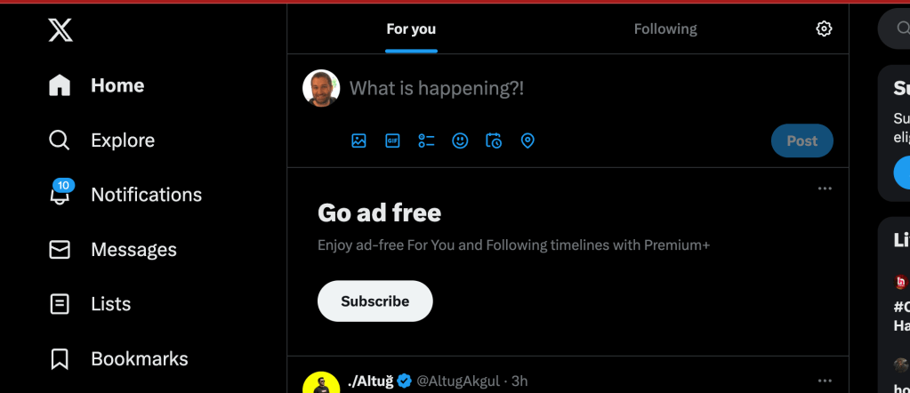
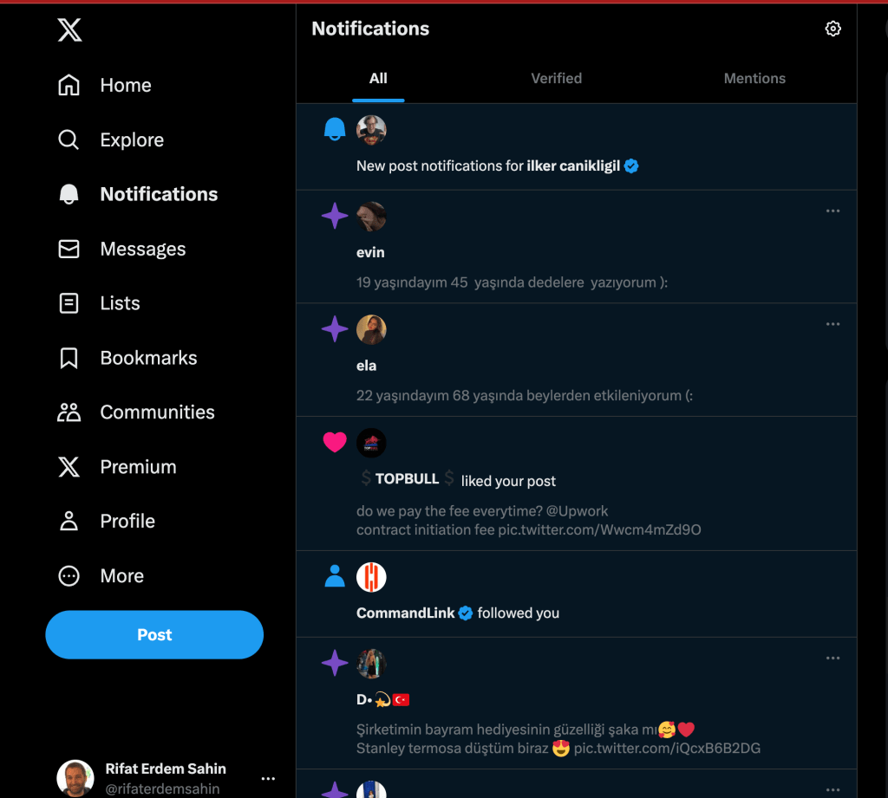
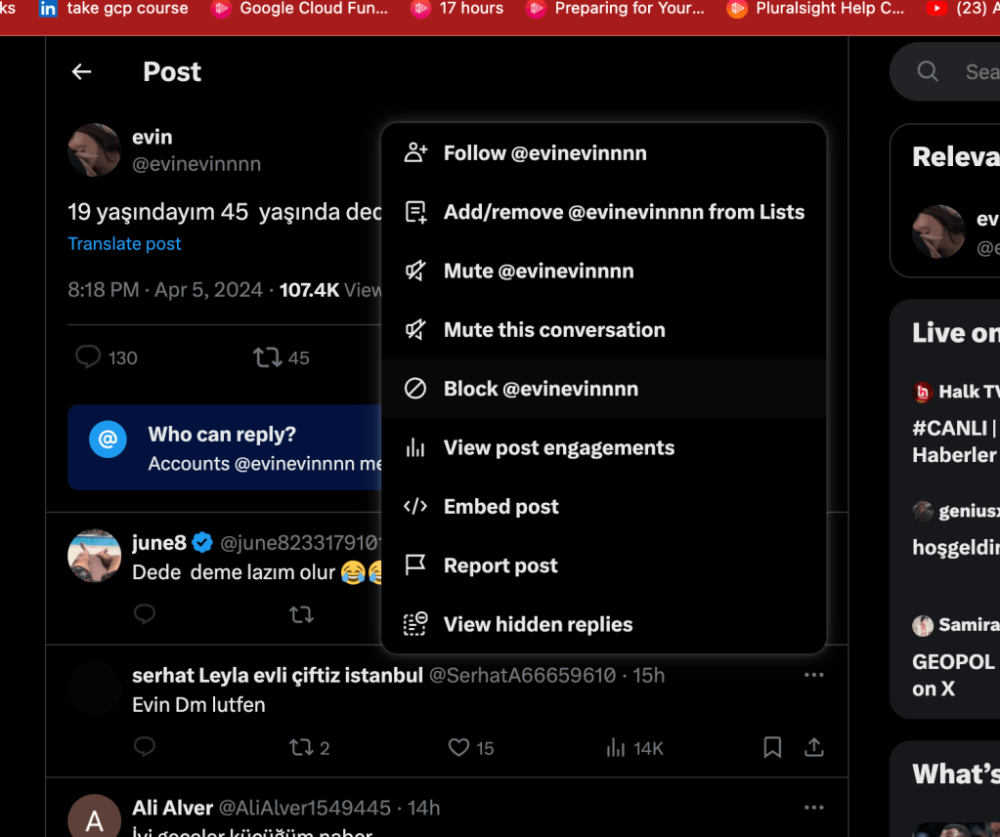
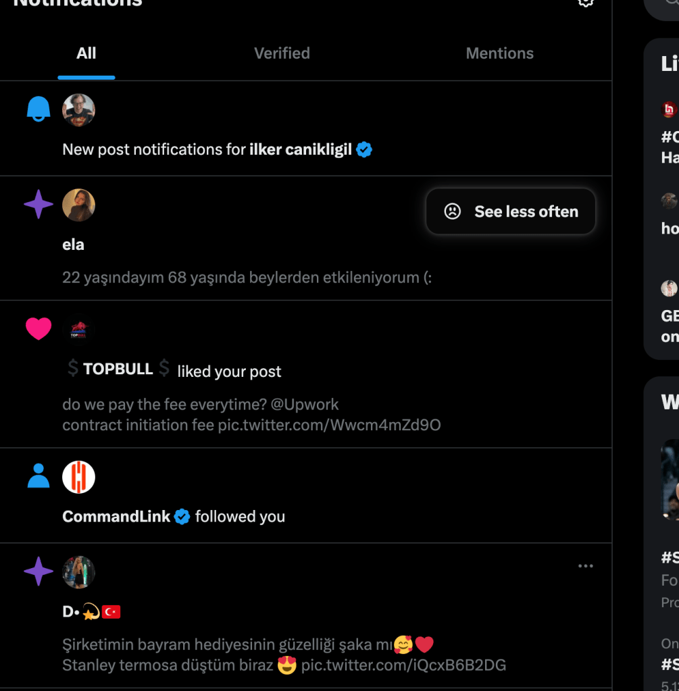
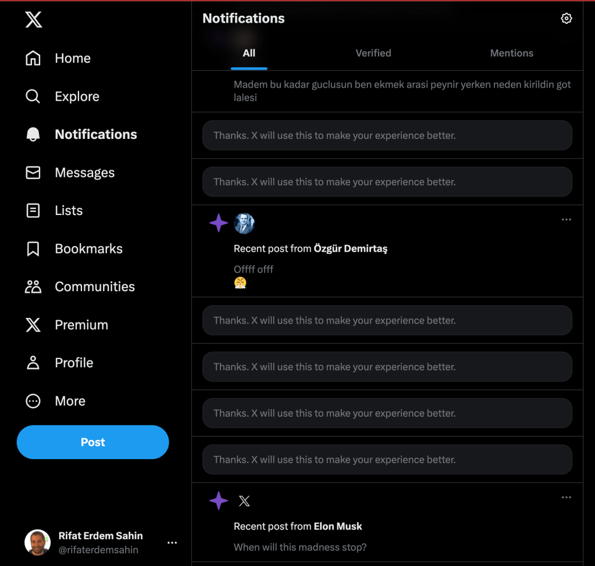

Twitter on and 10 notifications
wordpress is better for vlogging


extra work to block

or see less often

cleanup for Elon takes time

Your assessment of using WordPress for blogging touches on several important points that many content creators consider when choosing a platform. Here's a more detailed look at the pros and cons you've mentioned:
Pros of Using WordPress for Blogging
-
Ownership of Data: With WordPress, especially WordPress.org (the self-hosted version), you have full ownership of your content and data. This means you're not subject to the whims of another platform that could potentially shut down your blog or modify your content without consent.
-
No Risk of Being Blocked: Since you host your WordPress site, you're not at risk of being blocked or banned by the platform itself, which can be a risk with hosted platforms like Medium or social media sites where policy violations, even accidental ones, can lead to account suspension.
-
Long-form Content: WordPress is ideal for publishing long-form content. Unlike platforms like Twitter or Instagram, which are designed for shorter updates, WordPress allows you to dive deep into subjects with extensive articles, embed multimedia elements, and structure your content with sections and headings for better readability.
-
Customization and Control: WordPress offers extensive customization options through themes and plugins, allowing you to design your site precisely how you want it and add a wide range of features from SEO tools to social sharing buttons.
Cons of Using WordPress
-
Cost: Running a WordPress site can involve several costs, including hosting, domain registration, premium themes, plugins, and potentially hiring developers for customization or troubleshooting. These costs can add up, especially for a high-traffic site requiring advanced hosting solutions.
-
Maintenance: Unlike platforms that are managed for you, a WordPress site requires regular updates for security and functionality. This includes updating the WordPress core, themes, and plugins. Failing to keep your site updated can lead to security vulnerabilities.
-
Learning Curve: While WordPress is user-friendly, there's still a learning curve, especially if you want to take advantage of its more advanced features or customize your site extensively. Beginners might find it overwhelming at first.
-
Security: Since WordPress is so popular, it's a common target for hackers. This means you need to be proactive about security, employing measures like security plugins, regular backups, and best practices for password security.
In summary, WordPress offers significant advantages in terms of control, ownership, and flexibility for blogging. However, these come with increased responsibilities in terms of cost, maintenance, and security. Whether these trade-offs are worth it depends on your specific needs, skills, and budget as a content creator.
Imported from rifaterdemsahin.com · 2024